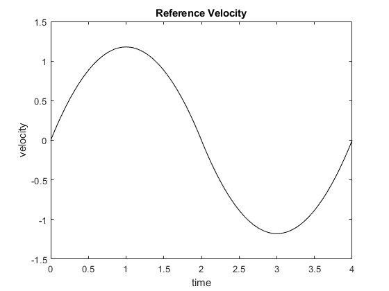
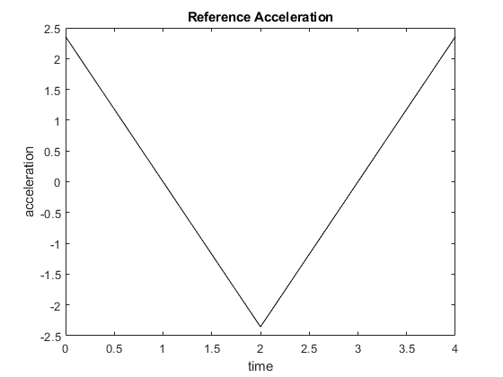

clear
close all
clc
function [xdot,tau,error,cmd_val] = HW3_Q6(t,x)
q1 = x(1); q1dot = x(2); q2 = x(3); q2dot = x(4);
m1 = 7.848;m2 = 4.49; l1 = 0.3;lc1 = 0.1554;
lc2 = 0.0341;I1 = 0.176;I2 = 0.0411;
g = 9.81;
M(1,1) = m1*lc1^2 + m2*(l1^2 + lc2^2 + 2*l1*lc2*cos(q2)) + I1 + I2;
M(1,2) = m2*(lc2^2 + l1*lc2*cos(q2)) + I2;
M(2,1) = M(1,2);
M(2,2) = m2*lc2^2 + I2;
C(1, 1) = -m2*l1*lc2*sin(q2)*q2dot;
C(1, 2) = -m2*l1*lc2*sin(q2)*(q1dot + q2dot);
C(2, 1) = m2*l1*lc2*sin(q2)*q1dot;
C(2, 2) = 0;
N(1,1) = m1*g*lc1*cos(q1) + m2*g*(l1*cos(q1)+lc2*cos(q1 +q2));
N(2,1) = m2*g*lc2*cos(q1 + q2);
[qd, vd, ad] = cubicpoly([0, 2, 4], [0, pi/2, 0], [0, 0, 0], t);
cmd_val = [qd, vd, ad];
Kp1 = 50 ; Kd1 =10;
Kp2 = 50; Kd2 = 10;
tau(1,1) = Kp1*(qd - q1) + Kd1*(vd - q1dot);
tau(2,1) = Kp2*(qd - q2) + Kd2*(vd - q2dot);
error = [qd - q1 qd - q2 vd - q1dot vd - q2dot]';
Mq_hat = 0.9*M; Cq_hat = 0.9*C; Nq_hat = 0.9*N;
tau_FF = Mq_hat*[ad;ad] +Cq_hat*[vd;vd]+ Nq_hat;
tau = tau+ tau_FF;
if (tau(1,1)<= -50)
tau(1,1) = -50;
end
if (tau(1,1) >= 50)
tau(1,1) = 50;
end
if (tau(2,1)<= -50)
tau(2,1) = -50;
end
if (tau(2,1) >= 50)
tau(2,1) = 50;
end
xdot = inv(M)*(tau - N -C*[q1dot;q2dot]);
xdot(4,1) = xdot(2,1);
xdot(2,1) = xdot(1,1);
xdot(1,1) = x(2);
xdot(3,1) = x(4);
end
q0 = [0.05 0 0.05 0]';
[t,x]=ode45(@(t,x) HW3_Q6(t,x),0:0.01:4,q0);
tau = zeros(length(t), 2);
error = zeros(length(t), 4);
cmd_val = zeros(length(t), 3);
for i = 1:length(t)
[~, tau(i, :),error(i,:),cmd_val(i,:)] = HW3_Q6(t(i), x(i, :));
end
figure(1)
hold on
plot(t,x(:,1),'black')
plot(t,x(:,3),'red')
xlabel('time')
ylabel('theta')
title('Robot Joint Position Response')
legend('joint response 1','joint response 2')
hold off
figure(2)
hold on
plot(t,tau(:,1),'black')
plot(t,tau(:,2),'red')
xlabel('time')
ylabel('Nm')
title('Robot Torque Response')
legend('joint torque 1','joint torque 2')
hold off
figure(3)
hold on
plot(t,error(:,1),'black')
plot(t,error(:,2),'red')
title('Position Error')
xlabel('time')
ylabel('m')
legend('position error 1','position error 2')
hold off
figure(4)
hold on
plot(t,error(:,3),'black')
plot(t,error(:,4),'red')
title('Velocity Error')
xlabel('time')
ylabel('m/s')
legend('velocity error 1','velocity error 2')
hold off
figure(5)
plot(t,cmd_val(:,1),'black')
xlabel('time')
ylabel('position')
title('Reference Postion')
figure(6)
plot(t,cmd_val(:,2),'black')
xlabel('time')
ylabel('velocity')
title('Reference Velocity')
figure(7)
plot(t,cmd_val(:,3),'black')
xlabel('time')
ylabel('acceleration')
title('Reference Acceleration')
disp('Problem 5b: Impact of Reduced Dynamic Model on System Performance');
disp('---------------------------------------------------------------');
disp('Position:');
disp('In problem 5b, the system will exhibit higher position tracking errors');
disp('due to the reduced compensation of dynamic forces.');
disp('The PD controller has to compensate for this underestimation, leading');
disp('to more oscillations or slower response times.');
disp(' ');
disp('Velocity:');
disp('The velocity tracking error is larger in problem 5b as well, as the');
disp('system cannot follow the desired velocity as closely without the full');
disp('compensation from the dynamics.');
disp(' ');
disp('Acceleration:');
disp('Problem 5b will show larger acceleration tracking errors, especially');
disp('during phases of rapid changes in acceleration, since the underestimation');
disp('of M, C, and N reduces the controller''s ability to match the desired dynamics.');
disp(' ');
disp('Conclusion:');
disp('In general, the reduced dynamic model in problem 5b results in higher tracking');
disp('errors (in terms of position, velocity, and acceleration), requiring the PD');
disp('controller to work harder and leading to a slight degradation in performance.');
disp('---------------------------------------------------------------');
Problem 5b: Impact of Reduced Dynamic Model on System Performance
---------------------------------------------------------------
Position:
In problem 5b, the system will exhibit higher position tracking errors
due to the reduced compensation of dynamic forces.
The PD controller has to compensate for this underestimation, leading
to more oscillations or slower response times.
Velocity:
The velocity tracking error is larger in problem 5b as well, as the
system cannot follow the desired velocity as closely without the full
compensation from the dynamics.
Acceleration:
Problem 5b will show larger acceleration tracking errors, especially
during phases of rapid changes in acceleration, since the underestimation
of M, C, and N reduces the controller's ability to match the desired dynamics.
Conclusion:
In general, the reduced dynamic model in problem 5b results in higher tracking
errors (in terms of position, velocity, and acceleration), requiring the PD
controller to work harder and leading to a slight degradation in performance.
---------------------------------------------------------------
 